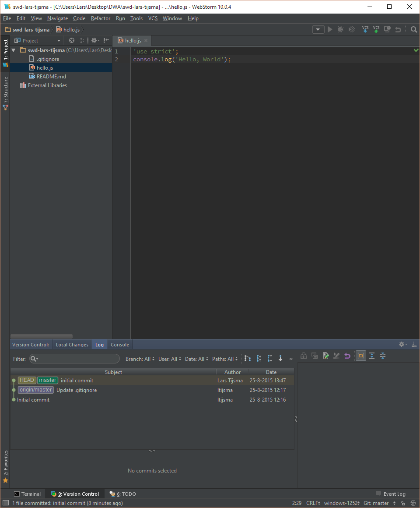

lab 4 Inspecting History
Goals
- Learn how to inspect the history of the repository
Inspect the history of the repository 01
The Log-tab can be used to check the commit history of the local (and remote) repo.
Execute:
Click on the Log-tab in the Vesion Control window
Output:
You should see
This window shows that your master branch pointing to the latest commit. Because HEAD is next to master, you are working on the master branch. Finally you can see that your remote repo is on commit behind your local repo.